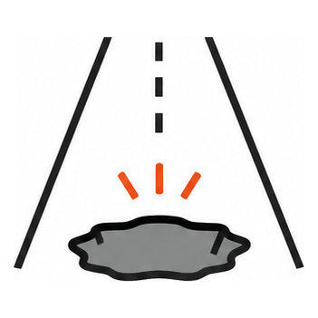
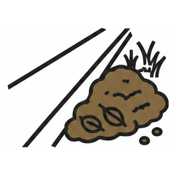
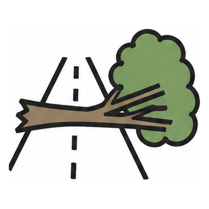
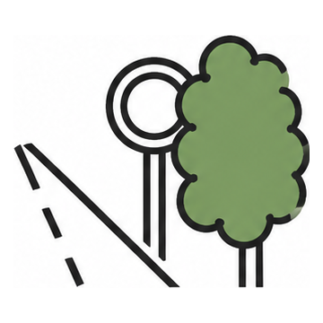
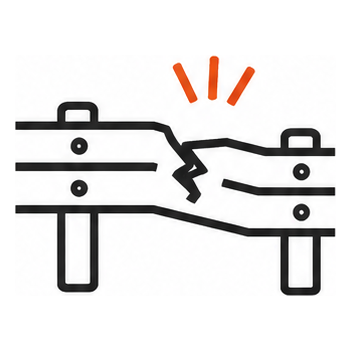
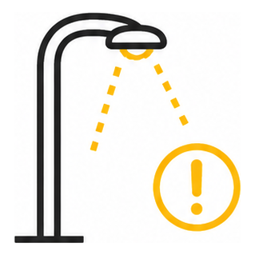

位置情報を取得中...
---
--:--
---
✕
名前を選んでください
なかむら
かみむら
Aさん
Bさん
Cさん

ポットホール

路肩堆積物

通行支障木

視認支障木

防護柵等異常

照明異常
📷 その他異常（写真を撮って送信）
▶ 名前を変更
図面表示
✕
読み込み中...
---
処理前
1 / 3 枚目
距離標固定
撮り直し
保存/共有
送信
次へ
落下物 3枚の確認
---
やり直し
☁️ アップロード
✕